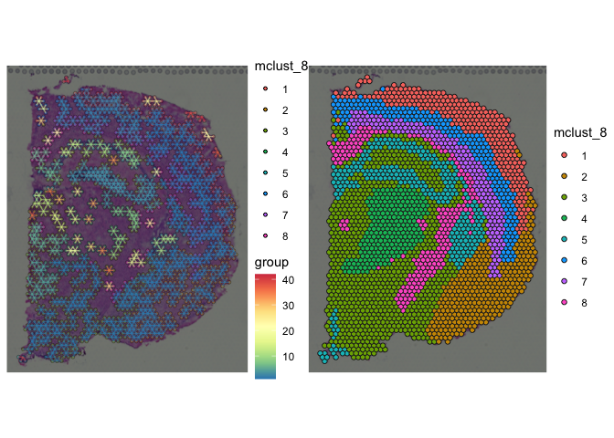
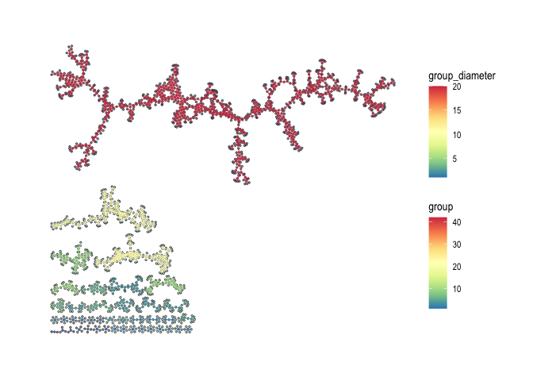
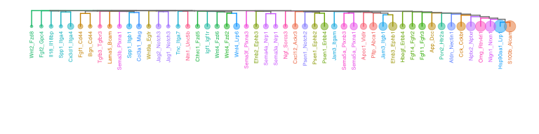

The goal of spatialCCC package is to investigate cell-cell signaling, by analyzing ligand-receptor interactions in spatial transcriptomic data.
Installation
You can install the development version of spatialCCC from GitHub with:
# install.packages("devtools")
devtools::install_github("dolchan/spatialCCC")Load necessary packages
library(SpatialExperiment)
library(scater)
library(dplyr)
library(tidyr)
library(magrittr)
library(purrr)
library(ggplot2)
library(patchwork)
library(ggraph)
library(tidygraph)
library(RColorBrewer)
library(ggtree)Load spatialCCC package
library(spatialCCC)
## basic example codeLigand-Receptor Database
Load built-in LRdb
This LRdb is downloaded from CellTalkDB: [http://tcm.zju.edu.cn/celltalkdb/download.php]. You can see the detail by:
?LRdb_human
?LRdb_mouseWe also created getter functions, get_LRdb() and get_LRdb_small(), to retrieve the database.
LRdb_m <-
get_LRdb_small("mouse")
LRdb_m %>%
arrange(ligand_gene_symbol, receptor_gene_symbol)
#> # A tibble: 105 × 10
#> LR ligand_gene_symbol receptor_gene_symbol ligand_gene_id receptor_gene_id
#> <chr> <chr> <chr> <dbl> <dbl>
#> 1 Adam… Adam10 Tspan14 11487 52588
#> 2 Adam… Adam15 Itgav 11490 16410
#> 3 Adam… Adam17 Itga6 11491 16403
#> 4 Adcy… Adcyap1 Vipr2 11516 22355
#> 5 Adip… Adipoq Adipor1 11450 72674
#> 6 Afdn… Afdn Nrxn3 17356 18191
#> 7 Apob… Apob Apobr 238055 171504
#> 8 Apob… Apob Lsr 238055 54135
#> 9 Apoe… Apoe Ldlr 11816 16835
#> 10 Apoe… Apoe Lrp6 11816 16974
#> # ℹ 95 more rows
#> # ℹ 5 more variables: ligand_ensembl_protein_id <chr>,
#> # receptor_ensembl_protein_id <chr>, ligand_ensembl_gene_id <chr>,
#> # receptor_ensembl_gene_id <chr>, evidence <chr>Load Visium spatial transcriptomic data
data_dir <- file.path("example", "visium_tutorial")
spe_brain <-
SpatialExperiment::read10xVisium(samples = data_dir,
type = "HDF5",
data = "filtered")
# to keep track of cell IDs
# spe_brain[["cell_id"]] <- colnames(spe_brain)
# Log-Normalize
spe_brain <- logNormCounts(spe_brain) Cell cluster data
Now, let’s read cell cluster data, obtained using GraphST.
cell_clusters <-
read.csv("example/visium_tutorial/outs/graphST.csv", row.names = 1)
# Make sure the rows of cell_clusters are in the same order of spe_brain.
cell_clusters <- cell_clusters[colnames(spe_brain), ]
cluster_ids <- colnames(cell_clusters)
cluster_ids <- cluster_ids[grep("mclust_", cluster_ids)]
for (cid in cluster_ids) {
spe_brain[[cid]] <- factor(cell_clusters[[cid]])
}
plot_spatial_feature(spe = spe_brain, feature = "mclust_8")
Compute Cell-Cell Communications over ligand-receptor pairs
# For full LRdb analysis, future::plan can be used
# for parallelization
# future::plan(future::multisession, workers = 4)
tictoc::tic()
ccc_tbl <- compute_spatial_ccc(spe = spe_brain,
assay_name = "logcounts",
LRdb = LRdb_m)
tictoc::toc()
#> 7.039 sec elapsed
# future::plan(future::sequential)
ccc_tbl %>%
dplyr::arrange(desc(LRscore))
#> # A tibble: 160,620 × 10
#> src dst d norm.d LR ligand receptor LRscore weight WLRscore
#> <chr> <chr> <dbl> <dbl> <chr> <chr> <chr> <dbl> <dbl> <dbl>
#> 1 GCGAGAGTTGC… GCGA… 0 0 Apoe… Apoe Lrp6 0.874 1 0.874
#> 2 GTTCATCGTTT… GCGA… 138 1.01 Apoe… Apoe Lrp6 0.869 0.986 0.857
#> 3 ACTTTACCCTC… GCGA… 138. 1.01 Apoe… Apoe Lrp6 0.868 0.980 0.851
#> 4 AGATGATGGAG… GCGA… 138. 1.01 Apoe… Apoe Lrp6 0.867 0.980 0.849
#> 5 GATATGGATTA… GATA… 0 0 Clu_… Clu Lrp8 0.858 1 0.858
#> 6 AGAAGTGATTC… AATG… 138 1.01 Calm… Calm1 Kcnq3 0.858 0.986 0.846
#> 7 TTGCATGCTGA… GTGC… 138. 1.01 Calm… Calm1 Kcnq3 0.858 0.980 0.840
#> 8 CCCAACATACG… GTGC… 138. 1.00 Calm… Calm1 Kcnq3 0.857 0.992 0.850
#> 9 TAACTCCATGG… GACA… 137 1 Clu_… Clu Vldlr 0.857 1 0.857
#> 10 CGGTGCAGATA… GTGC… 138 1.01 Calm… Calm1 Kcnq3 0.857 0.986 0.845
#> # ℹ 160,610 more rowsAdd cluster lables to CCC table.
ccc_tbl <-
ccc_tbl %>%
amend_ccc_table_with_cell_annots(spe = spe_brain, annot_cols = c("mclust_8", "mclust_10")) %>%
set_ccc_table_default_cluster("mclust_8")Summarize cell-cell communication between cell clusters
ccc_tbl_between_clusters <-
ccc_tbl %>%
group_by(mclust_8.src, mclust_8.dst, LR) %>%
summarise(n = n(),
LRscore.sum = sum(LRscore),
WLRscore.sum = sum(WLRscore))
#> `summarise()` has grouped output by 'mclust_8.src', 'mclust_8.dst'. You can
#> override using the `.groups` argument.
ccc_tbl_between_clusters %>%
dplyr::arrange(desc(n))
#> # A tibble: 1,662 × 6
#> # Groups: mclust_8.src, mclust_8.dst [46]
#> mclust_8.src mclust_8.dst LR n LRscore.sum WLRscore.sum
#> <fct> <fct> <chr> <int> <dbl> <dbl>
#> 1 3 3 Calm1_Kcnq3 2845 2183. 2159.
#> 2 3 3 Fgf1_Fgfr3 2713 1786. 1766.
#> 3 3 3 Clu_Vldlr 2489 1862. 1842.
#> 4 3 3 Cx3cl1_Itgav 2470 1681. 1663.
#> 5 3 3 L1cam_Itgb1 2262 1461. 1445.
#> 6 3 3 Apoe_Ldlr 1953 1487. 1471.
#> 7 3 3 Fgf13_Fgfr2 1908 1231. 1218.
#> 8 3 3 Adam15_Itgav 1876 1164. 1151.
#> 9 3 3 Afdn_Nrxn3 1820 1181. 1168.
#> 10 2 2 Calm1_Kcnq3 1788 1424. 1408.
#> # ℹ 1,652 more rows
ccc_tbl_between_clusters %>%
dplyr::filter(mclust_8.dst != mclust_8.src) %>%
dplyr::arrange(desc(n))
#> # A tibble: 1,278 × 6
#> # Groups: mclust_8.src, mclust_8.dst [38]
#> mclust_8.src mclust_8.dst LR n LRscore.sum WLRscore.sum
#> <fct> <fct> <chr> <int> <dbl> <dbl>
#> 1 3 5 Calm1_Kcnq3 259 203. 200.
#> 2 5 3 Calm1_Kcnq3 203 161. 159.
#> 3 3 5 Cx3cl1_Itgav 202 140. 138.
#> 4 3 5 Clu_Vldlr 181 138. 136.
#> 5 3 8 Fgf13_Fgfr2 159 113. 111.
#> 6 5 3 Afdn_Nrxn3 142 94.8 93.4
#> 7 3 5 Apoe_Lrp6 141 107. 106.
#> 8 1 6 Calm1_Kcnq3 138 111. 110.
#> 9 3 8 Clu_Vldlr 132 103. 102.
#> 10 8 3 Calm1_Kcnq3 132 101. 99.6
#> # ℹ 1,268 more rowsConvert CCC table to CCC graph
The conversion also adds various graph metrics to each CCC graph.
tictoc::tic("to_spatical_ccc_graph ...")
sp_col_data <- get_spatial_data(spe_brain)
ccc_graph_list <-
to_spatial_ccc_graph_list(ccc_tbl, sp_col_data, workers = 6)
tictoc::toc()
#> to_spatical_ccc_graph ...: 11.539 sec elapsedsummarize_ccc_graph_metrics() summarize those graph metrics for each LR pair.
tictoc::tic()
ccc_graph_metrics_summary_df <-
summarize_ccc_graph_metrics(ccc_graph_list)
tictoc::toc()
#> 0.062 sec elapsed
ccc_graph_metrics_summary_df %>%
arrange(graph_component_count)
#> # A tibble: 48 × 12
#> LR graph_n_nodes graph_n_edges graph_component_count graph_motif_count
#> <chr> <int> <dbl> <dbl> <int>
#> 1 Calm1_Kc… 2697 13616 3 24463
#> 2 Clu_Vldlr 2665 10624 3 20955
#> 3 Cx3cl1_I… 2617 11724 4 21978
#> 4 Adam15_I… 2388 9187 4 17301
#> 5 Afdn_Nrx… 2463 8262 6 16000
#> 6 Clu_Lrp8 2527 7510 6 15497
#> 7 L1cam_It… 2306 7682 6 14856
#> 8 Fgf1_Fgf… 2275 7569 7 14148
#> 9 Adam10_T… 2114 5924 8 10890
#> 10 Apoe_Lrp6 2497 6612 9 13761
#> # ℹ 38 more rows
#> # ℹ 7 more variables: graph_diameter <dbl>, graph_un_diameter <dbl>,
#> # graph_mean_dist <dbl>, graph_circuit_rank <dbl>, graph_reciprocity <dbl>,
#> # graph_clique_num <int>, graph_clique_count <int>summarize_ccc_graph_metrics(…, level = “group”) summarizes the metrics for each subgraph (group) in CCC graph (LR)
tictoc::tic()
ccc_graph_group_metrics_summary_df <-
summarize_ccc_graph_metrics(ccc_graph_list, level = "group")
tictoc::toc()
#> 0.062 sec elapsed
ccc_graph_group_metrics_summary_df
#> # A tibble: 3,313 × 12
#> LR group group_n_nodes group_n_edges group_adhesion group_motif_count
#> <chr> <int> <int> <dbl> <dbl> <int>
#> 1 Jag1_Notc… 24 3 2 0 1
#> 2 Jag1_Notc… 46 2 1 0 0
#> 3 Jag1_Notc… 47 2 1 0 0
#> 4 Jag1_Notc… 25 3 3 0 1
#> 5 Jag1_Notc… 1 13 23 0 19
#> 6 Jag1_Notc… 48 2 1 0 0
#> 7 Jag1_Notc… 49 2 2 0 0
#> 8 Jag1_Notc… 7 5 5 0 3
#> 9 Jag1_Notc… 26 3 5 0 1
#> 10 Jag1_Notc… 90 1 1 0 0
#> # ℹ 3,303 more rows
#> # ℹ 6 more variables: group_diameter <dbl>, group_un_diameter <dbl>,
#> # group_mean_dist <dbl>, group_girth <dbl>, group_circuit_rank <dbl>,
#> # group_reciprocity <dbl>Visualization
LR_of_interest <- "App_Dcc"
ccc_graph_list[[LR_of_interest]] %>%
activate(edges) %>%
as_tibble()
#> # A tibble: 3,822 × 40
#> from to src dst d norm.d LR ligand receptor LRscore weight
#> <int> <int> <chr> <chr> <dbl> <dbl> <chr> <chr> <chr> <dbl> <dbl>
#> 1 1 577 AAACAAGT… CAGC… 138 1.01 App_… App Dcc 0.745 0.986
#> 2 1 1938 AAACAAGT… TTCT… 138. 1.01 App_… App Dcc 0.685 0.980
#> 3 2 1569 AAACAATC… TAGT… 138 1.01 App_… App Dcc 0.739 0.986
#> 4 3 1251 AAACACCA… GGAA… 138 1.01 App_… App Dcc 0.671 0.986
#> 5 4 4 AAACAGAG… AAAC… 0 0 App_… App Dcc 0.798 1
#> 6 4 581 AAACAGAG… CAGC… 138. 1.01 App_… App Dcc 0.771 0.980
#> 7 5 5 AAACCGGG… AAAC… 0 0 App_… App Dcc 0.728 1
#> 8 5 805 AAACCGGG… CGCC… 138. 1.01 App_… App Dcc 0.726 0.980
#> 9 6 699 AAACCTCA… CCGA… 138. 1.01 App_… App Dcc 0.701 0.980
#> 10 6 1324 AAACCTCA… GGTA… 138. 1.01 App_… App Dcc 0.714 0.980
#> # ℹ 3,812 more rows
#> # ℹ 29 more variables: WLRscore <dbl>, mclust_8.src <chr>, mclust_10.src <chr>,
#> # mclust_8.dst <chr>, mclust_10.dst <chr>, cluster.src <chr>,
#> # cluster.dst <chr>, graph_n_nodes <int>, graph_n_edges <dbl>,
#> # graph_component_count <dbl>, graph_motif_count <int>, graph_diameter <dbl>,
#> # graph_un_diameter <dbl>, graph_mean_dist <dbl>, graph_circuit_rank <dbl>,
#> # graph_reciprocity <dbl>, graph_clique_num <int>, …spatial CCC graph plot with tissue image
gp_spccc <-
plot_spatial_ccc_graph(
ccc_graph = ccc_graph_list[[LR_of_interest]],
tissue_img = imgRaster(spe_brain),
node_color = "mclust_8",
node_size = 1,
node_alpha = 0.5,
edge_color = "group",
# clip = TRUE,
which_on_top = "edge"
)
gp_spccc_0 <-
plot_spatial_feature(spe = spe_brain,
feature = "mclust_8")
wrap_plots(gp_spccc, gp_spccc_0, ncol = 2)
ccc_graph_temp <-
ccc_graph_list[[LR_of_interest]] %>%
tidygraph::activate("edges") %>%
tidygraph::filter(mclust_8.src != mclust_8.dst) %>%
tidy_up_ccc_graph()
cells_of_interest <-
ccc_graph_temp %>%
tidygraph::activate("nodes") %>%
dplyr::pull("name")
gp_spccc <-
plot_spatial_ccc_graph(
ccc_graph = ccc_graph_temp,
tissue_img = SpatialExperiment::imgRaster(spe_brain),
node_color = "inflow.n",
node_size = 1.25,
node_alpha = 1,
edge_color = "group",
show_arrow = TRUE,
# clip = TRUE,
which_on_top = "node"
)
gp_spccc_0 <-
plot_spatial_ccc_graph(
ccc_graph = ccc_graph_list[[LR_of_interest]],
tissue_img = SpatialExperiment::imgRaster(spe_brain),
image_alpha = 0,
cells_of_interest = cells_of_interest,
edges_expanded_to_group = FALSE,
node_color = "mclust_8",
node_size = 1.25,
node_alpha = 0.5,
edge_color = "group",
show_arrow = TRUE,
# clip = TRUE,
which_on_top = "node"
)
gp_spccc_1 <-
plot_spatial_feature(spe = spe_brain,
feature = "mclust_8",
cells_of_interest = cells_of_interest)
wrap_plots(gp_spccc, gp_spccc_1, ncol = 2)
gp_spccc_0
spatial CCC graph plot without tissue image
In this case, graph layout can be “spatial” which keeps the original spatial locations, or other graph layout algorithm supported by igraph package.
gp_spccc <-
plot_spatial_ccc_graph(
ccc_graph = ccc_graph_list[[LR_of_interest]],
graph_layout = "spatial",
node_color = "mclust_8",
node_size = 1,
edge_color = "group_diameter",
clip = TRUE,
# ghost_img = TRUE,
which_on_top = "edge"
)
gp_spccc_0 <-
plot_spatial_ccc_graph(
ccc_graph =
ccc_graph_list[[LR_of_interest]],
graph_layout = "spatial",
node_color = "mclust_8",
node_size = 1,
edge_color = "group_diameter",
clip = TRUE,
# ghost_img = TRUE,
which_on_top = "node"
)
wrap_plots(gp_spccc, gp_spccc_0, ncol = 2, guides = "collect")
Below uses “auto” layout (“kk” spring layout).
plot_spatial_ccc_graph(ccc_graph = ccc_graph_list[[LR_of_interest]],
# tissue_img = imgRaster(spe_brain),
node_color = "group",
node_size = 0.1,
edge_color = "group_diameter",
edge_width = 0.1,
which_on_top = "edge")
In this case, below is “stress” layout.
plot_spatial_ccc_graph(ccc_graph = ccc_graph_list[[LR_of_interest]],
# tissue_img = imgRaster(spe_brain),
graph_layout = "stress",
node_color = "group",
edge_color = "group_diameter",
edge_width = 0.25,
which_on_top = "edge")
Cell-overlap distance
tictoc::tic()
cell_overlap_dist <-
dist_cell_overlap_ccc_tbl(ccc_tbl)
tictoc::toc()
#> 0.422 sec elapsed
tictoc::tic()
cell_overlap_lf <-
lf_cell_overlap_ccc_tbl(ccc_tbl)
tictoc::toc()
#> 0.503 sec elapsed
tictoc::tic()
LRs_high_cell_overlap <-
cell_overlap_lf %>%
dplyr::filter(d < 1) %>%
dplyr::select(lr1, lr2) %>%
unlist() %>% unique()
tictoc::toc()
#> 0.002 sec elapsed
tictoc::tic()
high_cell_overlap_dist <-
cell_overlap_dist[LRs_high_cell_overlap, LRs_high_cell_overlap]
tictoc::toc()
#> 0 sec elapsed
tictoc::tic()
high_cell_overlap_dist2 <-
cell_overlap_lf %>%
dplyr::filter(d < 1) %>%
dplyr::select(lr1, lr2, d) %>%
lf_to_dist()
tictoc::toc()
#> 0.007 sec elapsed
LR_ccc_summary_tbl <-
ccc_tbl %>%
pull(LR) %>%
table() %>%
as_tibble() %>%
rename("LR" = ".") %>%
arrange(desc(n)) %>%
left_join(
ccc_tbl %>%
select(LR, ligand, receptor) %>%
distinct(),
by = "LR"
)
hclus.res <- fastcluster::hclust(as.dist(high_cell_overlap_dist),
method = "complete")
ape::as.phylo(hclus.res) %>%
ggtree(layout="dendrogram") %<+% LR_ccc_summary_tbl +
aes(color=receptor) +
theme(legend.position = "none") +
geom_tippoint(aes(size=n), alpha=0.5) +
geom_tiplab(size=2, offset=-0.15) +
xlim_tree(3)
ape::as.phylo(hclus.res) %>%
ggtree(layout = "circular") %<+% LR_ccc_summary_tbl +
aes(color=receptor) +
# aes(color=ligand) +
theme(legend.position = "none") +
geom_tippoint(aes(size=n), alpha=0.5) +
geom_tiplab(size=2, offset=0.05)